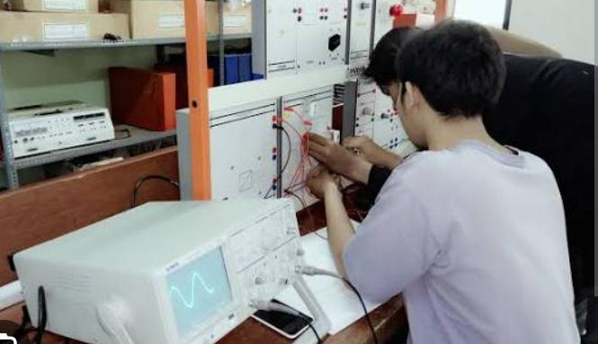
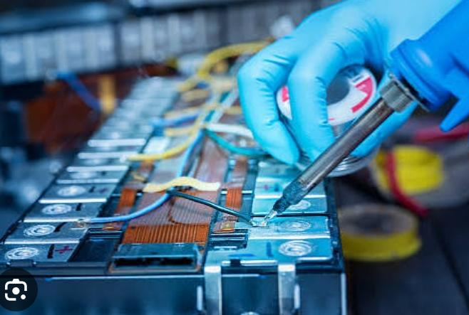
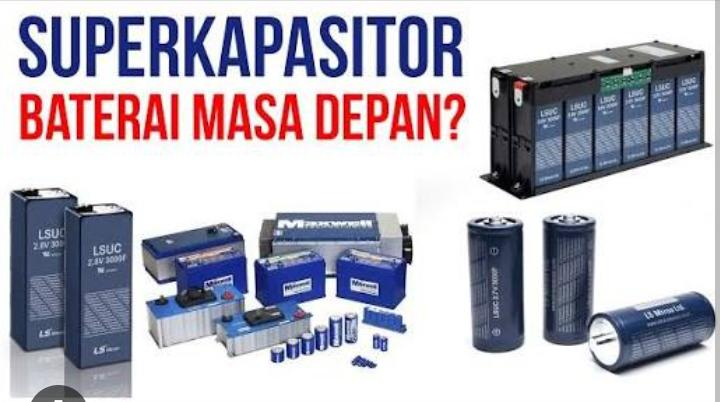

Lab Elektronika & Instrumentasi
Lab Elins fokus pada penelitian elektronika, sensor, instrumentasi, dan sistem otomatis modern.
Iinternet Of Things

Semikonduktor

Intrumentasi

Lab ini memfasilitasi penelitian dan simulasi fisika teoritis serta komputasi ilmiah, mendukung pengembangan model dan algoritma modern.
Lab Elins fokus pada penelitian elektronika, sensor, instrumentasi, dan sistem otomatis modern.

Lab Medik mendukung riset bioteknologi, kesehatan, dan pemodelan biomolekuler.

Lab Material meneliti sifat material, nanoteknologi, dan pengembangan material inovatif.